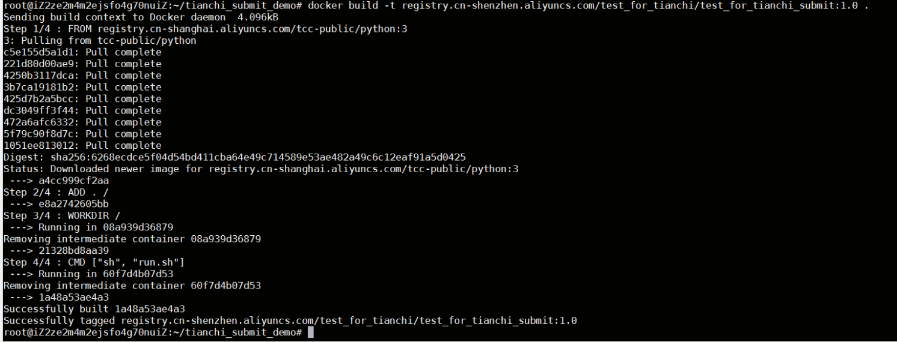

Docker使用记录
今天初次接触Docker的使用，记录一下自己的学习心得和理解，加深一下印象。
Dockder是啥？
首先需要理解几个概念：镜像，容器
什么是容器？
简单来说，操作系统在管理进程时，可以把整个操作系统看成一个大的容器，所有的进程在这一个容器中运行。因此这些进程之间有几个特点：
- 进程之间能够互相看见，能够通信。这会导致不同进程之间的相互影响。
- 所有进程都使用同一个文件系统。这会导致不同进程之间的数据能够被所有进程进行增删改查，可能会造成进程间数据的破坏，从而影响其他进程的正常运行。
- 所有进程使用相同的系统资源。（如CPU，内存等），这样导致进程之间存在抢占资源的问题。
所以为了解决上述这些问题，我们需要为某些进程的运行提供独立的运行环境，从而避免它影响其他正常的进程。容器的本质目的就是如此。
引用一下对容器的解释：容器就是一个视图隔离、资源可限制、独立文件系统的进程集合。所谓“视图隔离”就是能够看到部分进程以及具有独立的主机名等；控制资源使用率则是可以对于内存大小以及 CPU 使用个数等进行限制。容器就是一个进程集合，它将系统的其他资源隔离开来，具有自己独立的资源视图。
容器具有一个独立的文件系统，因为使用的是系统的资源，所以在独立的文件系统内不需要具备内核相关的代码或者工具，我们只需要提供容器所需的二进制文件、配置文件以及依赖即可。只要容器运行时所需的文件集合都能够具备，那么这个容器就能够运行起来。
什么是镜像？
我们将这些容器运行时所需要的所有的文件集合称之为容器镜像。（简单来说可以理解为容器运行所需要的所有的依赖文件构成的集合）
那么怎么构建镜像呢？
通常情况下，我们会采用 Dockerfile 来构建镜像，Dockerfile 可以看做是一系列的命令，这些命令都会对已有的文件系统进行操作，这样就会带来文件系统内容的变化，直到最终将容器运行所需的所有依赖文件都构建出来，就构造好了对应的镜像。
容器 与 VM
听起来容器和虚拟机（VM）作用非常像。但是想一想他们的差别还是比较明显的：
VM是从操作系统级别上进行隔离，因此隔离程度要大于容器，但也因此需要耗费更多的资源。
容器则比较轻量级，但是隔离效果自然弱于VM。
Docker安装与配置
Windows的安装教程见这里
基本上下载安装就好了。
Ubuntu系统上可以直接输入如下命令：
1 | $ sudo apt-get update |
我运行的时候提示缺少containerd，只需要提前运行sudo apt install containerd进行安装就好了。
一些常用的命令
查看所有镜像： docker images
查看当前正在运行的容器： docker ps
查看所有容器（包含已退出的）： docker ps -a
删除镜像： docker rmi 镜像id
删除容器： docker rm 容器id
（删除镜像时需要先删除使用该镜像的容器）
（在删除时还可能遇到如下情况，多个镜像id相同，此时可以根据”REPOSITORY”和”TAR”进行删除）
其他命令见Docker命令大全进行查阅。
使用示例
这里以天池比赛的Docker入门赛为例，看一下Docker完整的使用过程。
任务描述
- 输出Hello world
- 计算 /tcdata/num_list.csv中一列数字的总和。
- 在/tcdata/num_list.csv文件中寻找最大的10个数，从大到小生成一个ListList.
num_list.csv文件中只有一列不为负的整数，其中存在重复值。
生成入口脚本run.sh，放置于镜像工作目录。运行后生成结果result.json放置于工作目录（与run.sh同目录），评分系统将根据result.json进行打分。json文件如下所示：
1 | { |
天池的比赛提交规则就是提交一个镜像，要求容器执行之后能够生成比赛要求的包含输出结果的文件，然后根据结果进行成绩判定。
在这里，要输出的结果就是result.json文件。
使用过程
整个过程主要包括：镜像的构建，镜像的推送，提交系统进行判定。
1. 镜像构建
天池已准备了常用的Python基础镜像，可直接拉取使用：docker pull registry.cn-shanghai.aliyuncs.com/tcc-public/python:3
这个过程类似于导入python包一样，在Dockerfile中就可以使用FROM命令来直接使用。
然后我们在一个新文件夹中需要准备的就是如下几个文件：
1 | —— |
其中，Dockerfile文件用来构建镜像，示例如下：
1 | # Base Images |
hello_world.py文件就是编写的要实现题目中要求的文件。这里示例如下：
1 | import json |
run.sh文件就是一个sh脚本文件，这里的作用就是执行该目录下的hello_world.py文件从而生成结果：
1 | python hello_world.py |
2. 镜像的推送
天池比赛需要将镜像推送到阿里云镜像仓库进行提交，因此需要先注册一个阿里云的镜像服务。阿里云容器镜像服务免费开通镜像托管。建议设置私有仓库，并一定牢记仓库密码，后续提交需要使用。
开通后进入镜像仓库，创建命名空间以及镜像仓库，仓库类型设为私有，代码源设为本地仓库。
创建成功之后，可以看到详情页，仓库地址一般使用公网地址即可。
然后我们构建我们本地的镜像并推送到仓库中：
- 执行
docker build -t 仓库地址:版本号 .命令构建镜像。仓库地址是刚刚创建的仓库地址的公网地址，版本号自己命名，用来区分每次构建的镜像。最后的.是构建镜像的路径，因为是当前目录，所以是.，不能省略。
这里参考官方教程，假设仓库地址是registry.cn-shenzhen.aliyuncs.com/test_for_tianchi/test_for_tianchi_submit，所以完整命令为：docker build -t registry.cn-shenzhen.aliyuncs.com/test_for_tianchi/test_for_tianchi_submit

构建完成后可先验证是否正常运行，正常运行后再进行推送。
CPU镜像：docker run your_image sh run.sh
GPU镜像：nvidia-docker run your_image sh run.sh推送到镜像仓库
docker push registry.cn-shenzhen.aliyuncs.com/test_for_tianchi/test_for_tianchi_submit:1.0
注意推送之前需要登录登录阿里云Docker Registry：sudo docker login --username=用户名 registry.cn-hangzhou.aliyuncs.com
用于登录的用户名为阿里云账号全名，密码为开通服务时设置的密码。
3. 天池系统提交
推送完之后，就可以去天池系统进行提交了
根据【我的成绩】中的分数和日志可以查看运行情况。